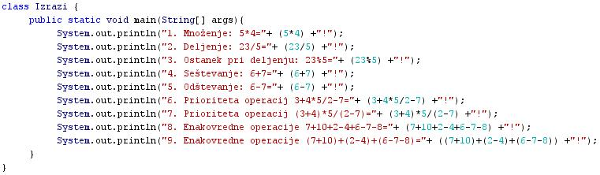
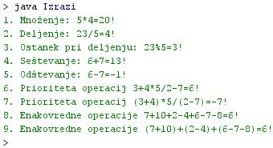

IZRAZI IN PRIORITETA OPERACIJ
- Izrazi so zapisi, ki vsebujejo spremenljivke in operande.
- Izrazi so zapisi operacij, ki jih izvajamo nad spremenljivkami, ki so vkljuèene v te izraze.
- Spremenljivke v izrazih zato imenujemo tudi operandi.
- Primer: 3+4*5/2-7 - operandi so števila 3, 4, 5, 2, 7, operatorji so +, *, /, -.
- Izraze moramo pisati v skladu s pravili programskega jezika, v katerem pišemo program.
- Pravila pisanja programa imenujemo sintaksa.
- Izraz je torej zapis neke operacije, izvedene nad operandi.
- Vsaka izvedba operacije nad operandi vedno izraèuna neko novo vrednost - rezultat.
- V programiranju pravimo, da izraz vrne vrednost.
- Primer: 3+4*5/2-7 vrne vrednost 6.
- Podatkovni tip vrednosti izraza je odvisen od podatkovnih tipov operandov in vrste operacije v izrazu.
- Primer: 3+4*5/2-7 - podatkovni tip rezultata je celo število (integer), ker so istega podatkovnega tipa tudi operandi.
- Java omogoèa pisanje sestavljenih izrazov, ki vsebujejo veè operandov in operacij.
- Prvi pogoj za take izraze je ta, da morajo biti vsi operandi v izrazu pripadati istemu tipu podatkov.
- Drugi pogoj pa je upoštevanje pomembnosti posameznih operacij v sestavljenem izrazu.
- Izid niza razliènih operacij v sestavljenem izrazu je odvisen od vrstnega reda izvedbe teh operacij.
- Upoštevati moramo tako imenovano prioriteto operacij.
- Štiri osnovne aritmetiène operacije so po pomembnosti ali prioriteti razvršèene takole: množenje (*) in deljenje (/) izvajamo pred seštevanjem (+) in odštevanjem (-).
- Množenje in deljenje sta med sevoj enakovredna. Seštevanje in odštevanje sta med seboj enakovredna.
- V Javi je dodan še ostanek pri deljenju (%).
- Vse operacije v izrazih so torej v Javi razporejene takole: *, /, %, +, -.
- Ostanek pri deljenju je enakovreden množenju in deljenju. Ima torej prednost pred seštevanjem in odštevanjem
- Primer: 3+4*5/2-7 - najprej izvedemo množenje (4*5), nato deljenje ((4*5)/2), nato seštevanje (3+((4*5)/2)) in na koncu še odštevanje ((3+((4*5)/2))-7).
- Vrstni red izvajanja operacij v sestavljenem izrazu lahko spremenimo z uporabo oklepajev.
- Primer: (3+4)*5/(2-7).
- Èeprav so operandi in operatorji povsem enaki v obeh izrazih, sta rezultata, ki ju vrneta izraza, razlièna.
- Èe v izrazu nastopi veèkrat ista operacija ali enakovredne operacije, lahko izvedemo operacijo kar od leve proti desni.
- Primer: 7+10+2-4+6-7-8, koraki izvedbe; 1. (7+10), 2. (7+10)+2, 3. ((7+10)+2)-4, 4. (((7+10)+2)-4+6), 5. ((((7+10)+2)-4+6)-7), 6. (((((7+10)+2)-4+6)-7)-8).
VAJA 16:
- V okolju za pisanje izvorne kode v jeziku Java, za prevajanje in za interaktivno delo zapiši zgornji program "Izrazi". Pomagaj si s sliko.
- Kodo lahko tudi kopiraš iz te datoteke in jo prilepiš v okolje, v katerem pišeš programèke. Pozor: koda, ki jo boš kopiral/a, vsebuje eno, dve, tri ali štiri napake. Èe želiš, da bo program deloval, moraš napake odkriti in jih odpraviti.
- Izvorno kodo shrani pod imenom "ImePriimek16.java". ImePriimek je seveda tvoje lastno ime in priimek.
- Datoteko "ImePriimek16.java" prevedi.
- Prevedeno datoteko zaženi, preveri rezultat v interaktivnem oknu in poklièi profesorja, da vidi rezultat.
1. Vprašanja:
1. Kaj so izrazi?
2. Kaj so operandi?
3. Kaj so operatorji?
4. Kaj je sintaksa?
5. Od èesa je odvisen podatkovni tip rezultata, ki ga izraz vrne?
6. Kaj so sestavljeni izrazi?
7. Kaj je prioriteta operacij?
8. Zapiši vse operacije v Javi in jih razvrsti po pomembnosti.
9. Kako raèunamo sestavljene izraze z enakovrednimi operatorji?
10. Zapiši številke izpisanih stavkov v priemru te uène enote, kjer nastopajo sestavljeni izrazi.
11. Zakaj se rezultat izrazov v stavkih 6 in 7 razlikuje, èe pa v njih nastopajo isti operandi in iste operacije?
12. Zakaj se rezultat izrazov v stavkih 8 in 9 ne razlikuje, èeprav smo operande združevali na razlièna naèina?
2. Zapiši od ene do pet kljuènih besed, ki povzemajo vsebino te uène enote.
3. Povezave do dodatnih informacij.
Gradiva na spletnih straneh fakultete za matematiko in fiziko v Ljubljani.
Spletni priroènik proizvajalca programskega okolja Java. To je podjetje Sun.
|